Gift of the Nature
Page 75
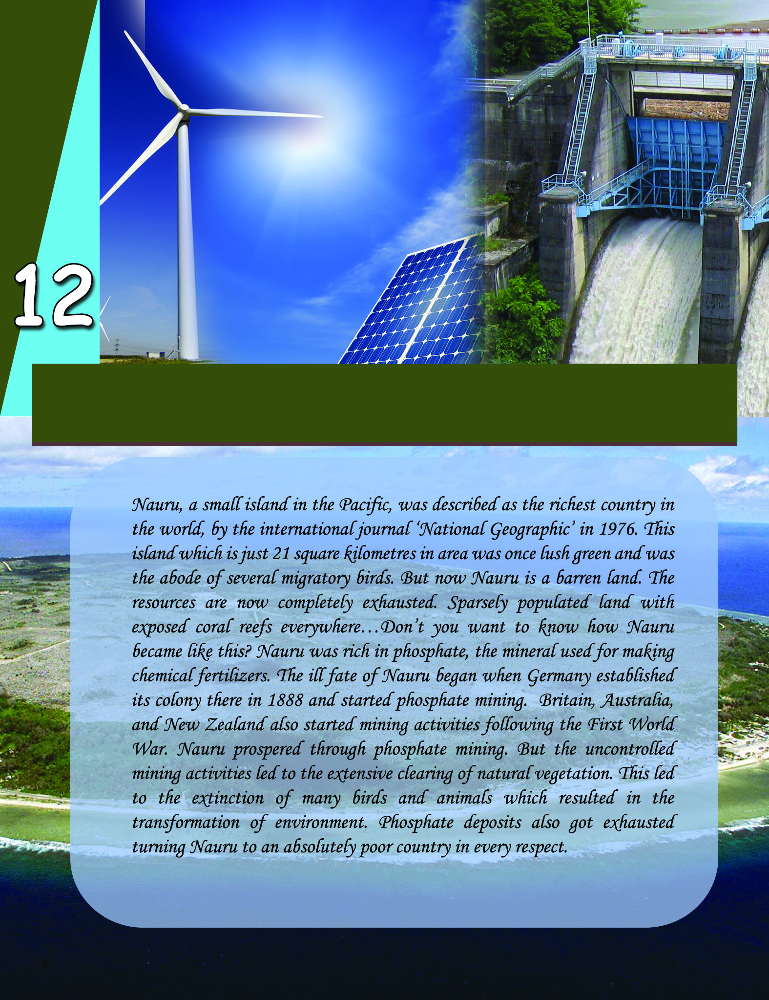
Page 76

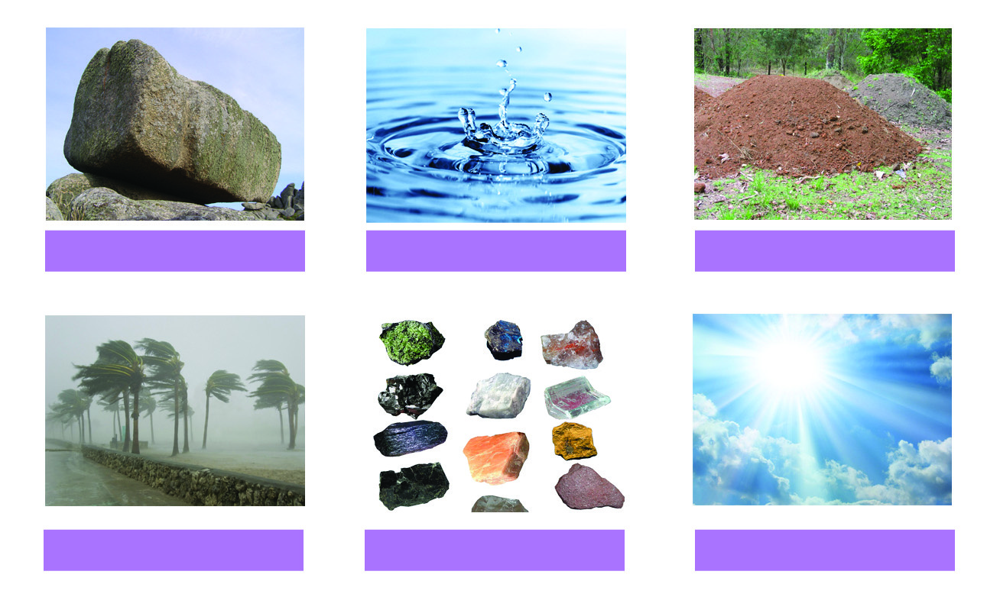
Social Science
172
Gift of Nature
You have read about Nauru, the country which was once rich
because of its phosphate mineral resources but now has become
poor due to the depletion of the same! Now you might have the
following questions.
What are resources?
What causes resource depletion?
Should these resources be conserved?
This unit helps you to understand more about resources, resource
depletion, and resource conservation. Those things useful to man
are called resources. Given below are the pictures of a few
resources we obtain from nature.
Rocks
Water
Soil
Wind
Minerals
Sunlight
The things directly obtained from nature and are useful to man
are called natural resources.
Page 77

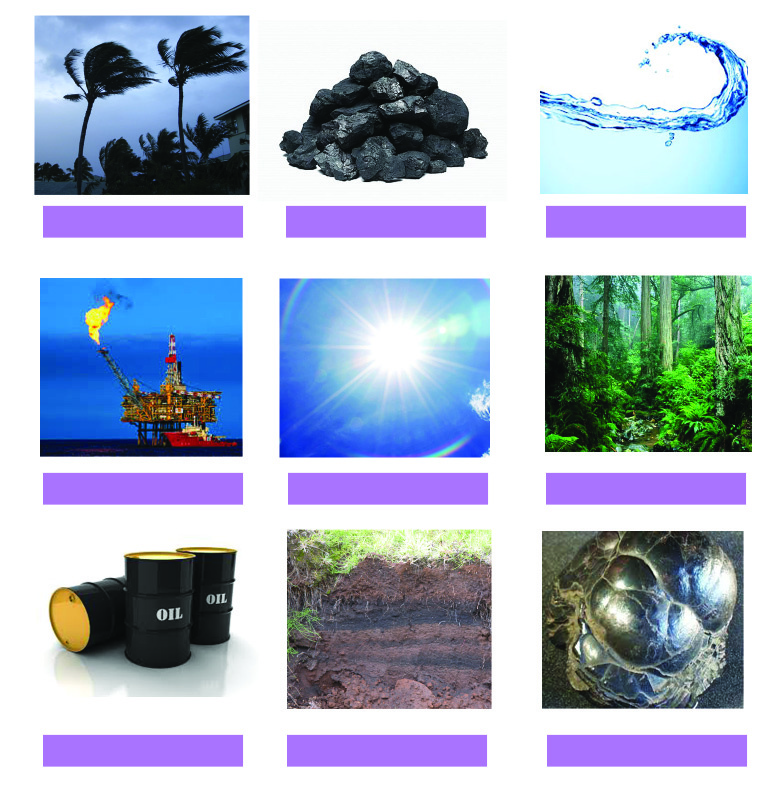
Standard VI
173
Gift of Nature
Our nature is endowed with innumerable resources such as air,
sunlight, wind, trees, water, etc.
Find out more examples for natural resources. Also mention
their uses.
A few among the resources you have listed are living things and
the rest are non-living things. The living resources are called
biotic resources and non-living resources are called abiotic
resources.
Some of these resources are available at all times. But some
resources get exhausted with use. Categorise the given resources
as ever available and exhaustible in the given format (Table 12.1).
Wind
Pew
Coal
Water
Natural gas
Sunlight
Forest
Petroleum
Soil
Iron ore
Page 78

Social Science
174
Gift of Nature
Ever available
resources
$
Wind
$
$
Exhaustible
resources
$
Coal
$
$
Renewable
resources
Non-renewable
resources
Increasing Needs; Exhausting Resources
Man makes extensive use of natural resources as if these were
meant exclusively for him. The demand for natural resources
increased with the increase in population, developments in
science and technology, communication facilities,
industrialisation, etc. This led to large scale depletion of
resources. Decrease in the availability and deterioration in the
quality of resources due to reckless usage is called resource
depletion. This resulted in depletion of resources and changes
in the environment.
Table. 12.1
Page 79

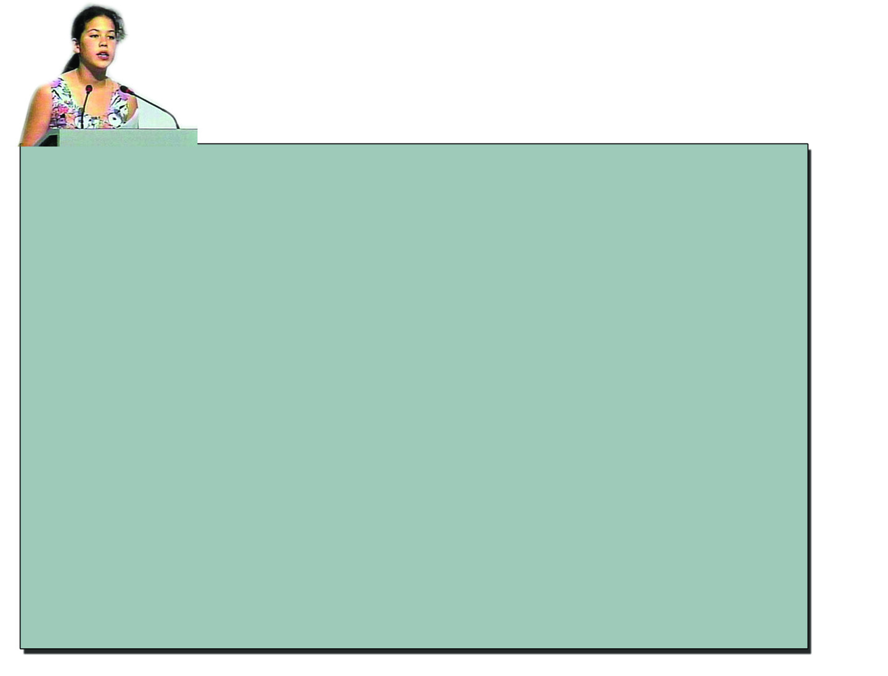

Standard VI
175
Gift of Nature
"I am fighting for my future….I am here to speak for all generations to come…on
behalf of the starving children…..I am here to speak for the countless animals dying across
this planet because they have nowhere left to go. We cannot afford to be not heard.
I am afraid to go out in the sun now because of the holes in the ozone. I am afraid to breathe
the air because I don't know what chemicals are in it…
…….the great herds of wild animals, jungles and rainforests, full of birds and butterflies, but
now I wonder if they will even exist for my children to see.
Did you have to worry about these little things when you were at my age?
……yet we act as if we have all the time we want and all the solutions………but I want you to
realise neither do you! …………………………………………………………….........
You don't know how to bring salmon back up a dead stream.
………………………………………………………………………………………….
And you can't bring back forests that once grew where there is now desert.
If you don't know how to fix it, please stop breaking it!
…………………………………………………………………………………………..
………………………………………………………………………………………….."
The lines you read above are excerpts from a speech given in
the first UN Earth Summit at Rio de Jenerio in Brazil in 1992.
Listening to Severn Cullis Suzuki, a 12-year old girl from Canada,
the representatives of various countries who attended the summit
were left speechless.
What are the worries shared by the girl in her speech?
Air subjected to pollution
Forests subjected to destruction
Animals facing the threat of extinction
Page 80


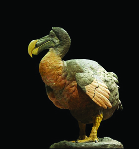
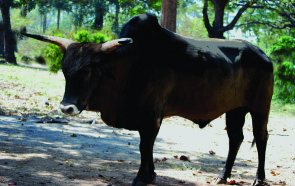
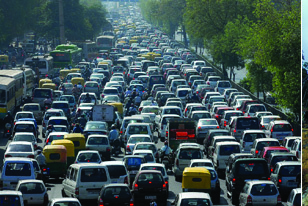

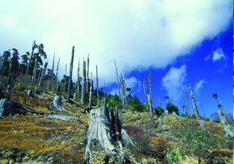
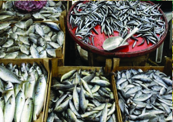
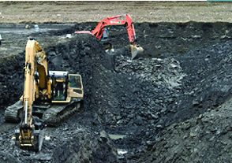

Social Science
176
Gift of Nature
Dodo is a bird that became extinct,
because of reckless exploitation of
resources by man. Dodo birds were the
inhabitants of the Mauritius islands in the
Indian Ocean and
were
killed
extensively for meat. Other animals
that are now extinct include Auroch
cattle found in India, Asian cheetah,
etc.
It was the speech
delivered by Smt. Indira
Gandhi, the then Prime
Minister of India, in the
Conference of United
Nations Organization
held at Stockholm in
1972, which led to the
observation of 5 June
as
the
World
Environment Day.
Observe the pictures given. What will be the consequences of
man's reckless use of resources? Write footnotes for these
pictures.
..............................................
Forest lands become
barren
..............................................
..............................................
What will happen if water, soil, petroleum and forests disappear
from the earth? Discuss.
1
2
3
4
Page 81


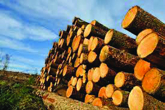
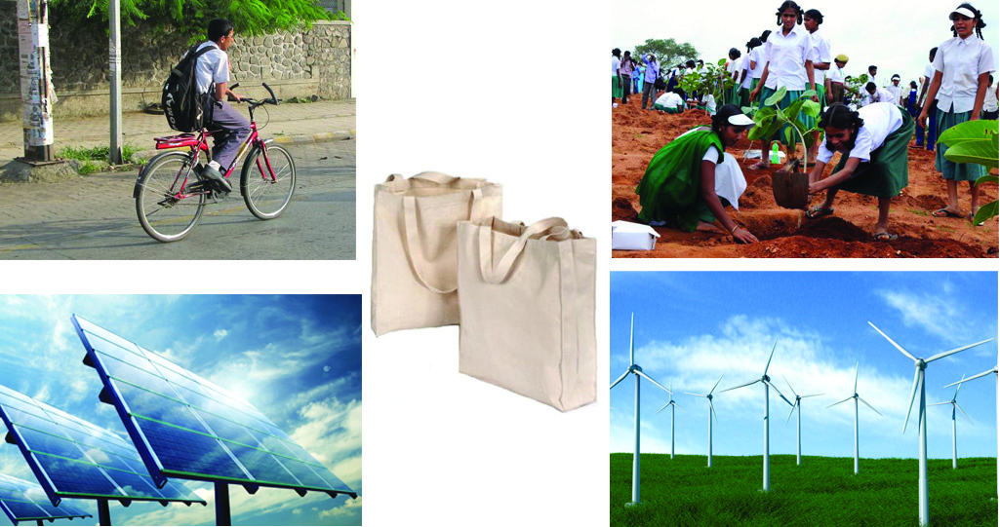


Standard VI
177
Gift of Nature
Conservation of Resources
Judicious and careful use of resources as well as giving enough
time for them to replenish can conserve the natural resources.
It is estimated that about
3 million cubic metre of wood
is being used by man every year.
Man clears forests about the size
of a football ground every
second. Only about half of the
present forest land will be left
by 2020 if the present trend
prevails.
Discuss how the situation shown in each of the pictures
contribute to resource conservation.
Page 82

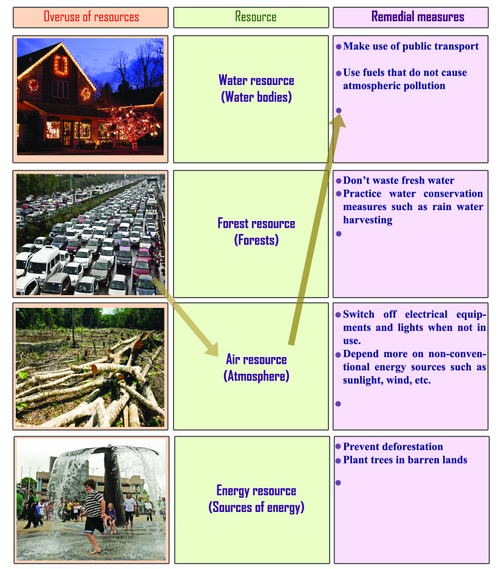


Social Science
178
Gift of Nature
Work sheet
Work sheet
Work sheet
Work sheet
Work sheet
Connect the columns in the respective order of
activities indicating overuse of resources, the type
of resources depleted by such activities, and the
remedial measures (Table 12.2). More remedial
measures may be added.
5 June
:World Environment
Day
22 April :World Earth Day
Days for nature
Table 12.2
Page 83


Standard VI
179
Gift of Nature
You might have understood that the natural resources are limited
and hence they are to be conserved. We have the right to use the
essential resources. But we don't have the right to use them
without considering the need of the future generations. 'Wise
use of resources' should be our motto.
"Earth provides enough to statisfy every
man's needs, but not every man's greed."
Gandhiji
These laws have emerged from the necessity to control the reckless exploitation
of nature that poses threat to the very existence of man.
1.
Section 48 A and Section 51 AG of the Indian Constitution stating the
conservation of nature as the duty of the Indian citizen.
2.
Nature Conservation Act
3.
Water Act
4.
Forest Conservation Act
5.
Air Act
Resource conservation and Acts in India
The people's movement for the conservation of the Periyar River in 1999 led to
the establishment of the Water Authority. Various Acts related to resource
conservation have emerged in Kerala following people's movements and through
governmental interventions. Examples: Act for Protection of Paddy Fields, Act
for Protection of Wetlands.
Resource conservation in Kerala
Safeguard Nature through Sustainable
Development
Development that meets the needs of the present without
compromising the right of future generations to fulfil their
needs is termed as sustainable development.
Page 84

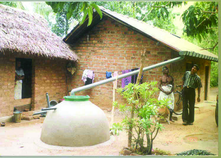
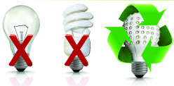
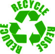

Social Science
180
Gift of Nature
12345678901234567890123456789012123456789012345678901234567890121234567890123456789012345678901
12345678901234567890123456789012123456789012345678901234567890121234567890123456789012345678901
12345678901234567890123456789012123456789012345678901234567890121234567890123456789012345678901
12345678901234567890123456789012123456789012345678901234567890121234567890123456789012345678901
12345678901234567890123456789012123456789012345678901234567890121234567890123456789012345678901
12345678901234567890123456789012123456789012345678901234567890121234567890123456789012345678901
12345678901234567890123456789012123456789012345678901234567890121234567890123456789012345678901
12345678901234567890123456789012123456789012345678901234567890121234567890123456789012345678901
From today onwards I will…
Reduce the energy consumption by
$ using fans and lights only when needed.
$ using only energy-efficient electrical equipments.
$ using LED bulbs instead of ordinary bulbs.
$
$
12345678901234567890123456789012123456789012345678901234567890121234567890123456789012345678901
12345678901234567890123456789012123456789012345678901234567890121234567890123456789012345678901
12345678901234567890123456789012123456789012345678901234567890121234567890123456789012345678901
12345678901234567890123456789012123456789012345678901234567890121234567890123456789012345678901
12345678901234567890123456789012123456789012345678901234567890121234567890123456789012345678901
12345678901234567890123456789012123456789012345678901234567890121234567890123456789012345678901
12345678901234567890123456789012123456789012345678901234567890121234567890123456789012345678901
12345678901234567890123456789012123456789012345678901234567890121234567890123456789012345678901
Recycling and reusing of resources as well as
reducing their use are the means to sustainable
development.
Let us work together
What to Do for Sustainable
Development?
Use the waste water from the kitchen for watering
plants.
Plant trees in public places.
Use the non-conventional energy sources such as
solar energy, wind energy, etc. to the maximum.
Ensure steps for rain water harvesting.
Use cloth bags instead of plastic carry bags.
Page 85

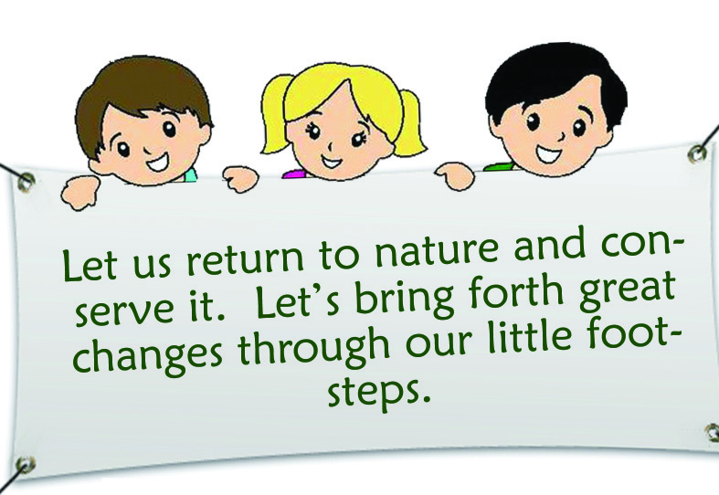
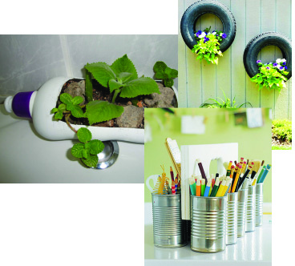

Standard VI
181
Gift of Nature
Resources
Resource conservation
Renewable resources
Non-renewable resources
Resource depletion
Reuse the following things
$ Paper
$ Bottles
$ Clothes
$
$
Engage in activities to make people aware of the issues
related to environment.
Use resources only if essential.
Page 86

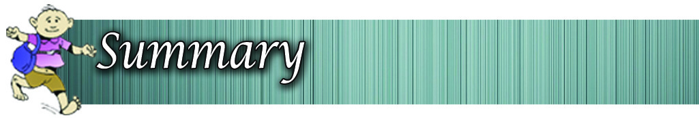

Social Science
182
Gift of Nature
The things in nature which are useful to man are called
resources.
Resources can be classified as renewable and non-
renewable.
Decrease in the availability and deterioration in the quality
of resources due to reckless use is called resource
depletion.
Judicious and careful use of resources as well as giving
enough time for the resources to replenish form the basis
of resource conservation.
Development that meets the needs of the present without
compromising the right of future generations to fulfil
their needs is termed as sustainable development.
The learner
lists the natural resources by recognising that they are
the things in nature useful to man.
classifies the natural resources into renewable and non-
renewable.
predicts the problems which may occur in the future due
to unscientific and uncontrolled use of resources.
suggests methods for resource conservation.
engages in individual and group activities leading to
sustainable development.
Page 87

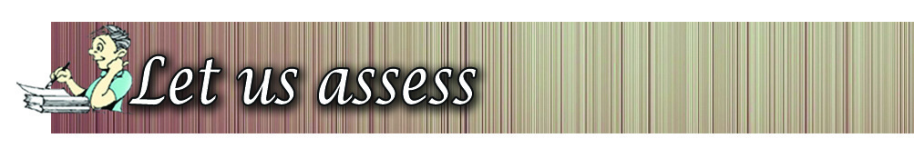

Standard VI
183
Gift of Nature
Raghavan is a farmer practising traditional method of
farming using bio manure, ploughing the field using cattle,
etc. List out the types of natural resources Raghavan makes
use of. Also define natural resource.
Categorise the following natural resources into biotic and
abiotic.
Forest, sunlight, fish, wind, cattle, water
Given below are the features of two motor cars. Identify
the characteristics of each and categorise in the following
format.
Car A
- Works on solar energy
Car B
- Works on petrol
Characteristics:
1. Does not cause atmospheric pollution
2. Uses non-renewable resource as fuel
3. Causes increase in the level of carbon dioxide in the
atmosphere.
4. This kind of cars are largely in use
5. Such cars are not used much
6. Uses renewable resource as fuel
Car A
Car B
$
$
$
$
$
$
Which of these cars is nature friendly? Substantiate your
answer.
Page 88


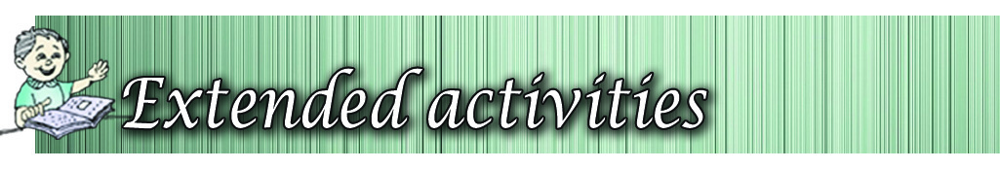
Social Science
184
Gift of Nature
Make inferences by analysing the statement 'We have
loaned the resources from the future generations'. Also
suggest any five measures for resource conservation.
Make a list of endangered species of plants and animals
and exhibit it in your class room.
Conduct a poster exhibition in connection with the World
Environment Day and the Earth Day.
Plant saplings in the available space in your school
compound and take care of them.
.
Completely
Partially
Need
improvement
Can identify the natural resources
Can classify resources as renewable and
non-renewable.
Can identify the activities leading to
resource depletion.
Can explain the importance of resource
conservation.
Can identify and list the ways to conserve
resources.
Can explain the importance of sustainable
development.
Self assessment
Self assessment
Self assessment
Self assessment
Self assessment